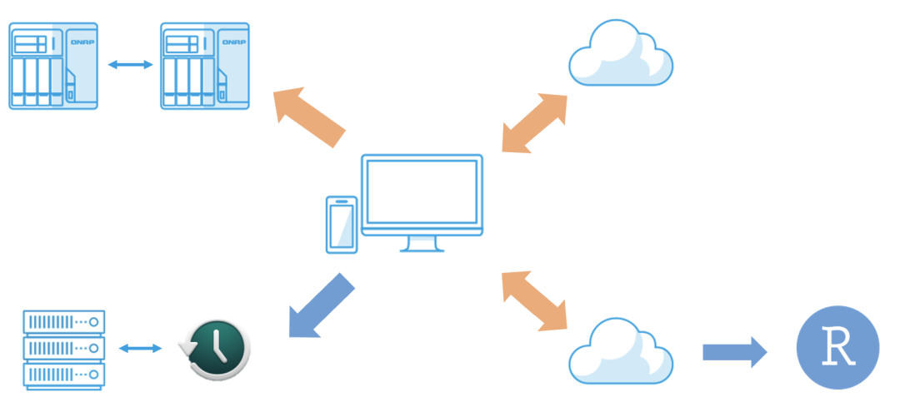

政观专栏|孙宇飞：政治科学研究者的数据管理
收录于合集
#专栏文章 11 个
#实用技术 19 个
作者简介： 孙宇飞，清华大学定量俱乐部讲师，清华大学社会科学学院政治学系博士生，研究方向为语言政治、身份政治和互联网政治。
计算社会科学的发展对作为研究者的我们提出更多的要求，我们不仅需要掌握数据分析方法和工具，还需要管理数据分析所用到的海量数据。数据管理包括备份、同步和还原等多个过程，业界已有完整但昂贵的管理方案，那作为花呗、信用卡和白条多重压力下的穷博士，我们应当如何设计和选择一条便宜但不简陋的数据管理方案呢？本文文章就是笔者在设计数据管理方案的心得，和诸君共勉。
什么是好的数据管理方案
明确需求有助于我们更好的设计方案，个人认为一个好的数据管理方案需要满足以下六个维度的要求。
第一点是安全 。这一点对于数据管理毋庸置疑，文件会毁掉、储存的介质（硬盘）会毁掉、甚至储存的物理空间也会出问题，因此，一个好的备份计划是要有不同的备份文件、备份介质和备份的物理空间。没有一个备份计划是完美的，但可以从目前广为接受的 3-2-1 备份策略开始：3 份副本、2 种不同备份媒体、1 个异地存储。
第二点是自动化 。能够懒对于笔者来说来说十分重要，无论是备份还是同步，自动化对于所有数据科学的使用者来说不仅是节省时间，更是避免我们在进行重复工作时出现错误，毕竟人类一败涂地。
第三点是尽可能小的占用储存空间。由于预算有限，因此备份文件能小则小。其实，减少备份文件占用的储存空间，提供备份来源端重复数据删除，简小化备份文件的备份方案，不仅是能够有效减少带宽使用，大幅降低云端备份空间使用，还能够大量减少数据备份及还原的时间，有效达成优异的灾难备援 RPO （Recovery Point Objective） 及 RTO （Recovery Time Objective）指标。
第四点是一个忠告：不要相信任何主体 。人可能会误删、企业可能会倒闭、云服务商一定会收超高的数据储存费、有些机构会把你的数据吃掉，因此跟3-2-1的数据备份策略的思路一样，我们不仅要将数据安全的储存在多个备份文件、储存介质、物理空间，这些备份文件最好还隶属于不同的人、机构。
第五点是还原方便 。这一点包括两个维度，一则是还原的速度快，一则是能够提供具有版本控制的备份文件。
第六点是能够将数据管理方案纳入一个能够进行多人协作的工作流 。数据是拿来用的不是拿来存的。因此如何使我们的数据管理方案能够纳入我们的工作流，最好还是一个能够进行多人协作的工作流，数据分析产生的数据能够自动进入数据管理，数据管理方案自动备份数据分析产生的数据对于数据科学的研究者来说非常重要。
因为篇幅原因工作流的搭建在此不表，如果大家有兴趣的话我们可以在之后的推文中讨论。
我们需要什么硬件和软件
在硬件和软件的选择上我们需要满足两个要求，第一个是价格合适；第二个是尽可能的能够满足上述六个维度的要求。因为并没有收到业配费，所以笔者只将笔者选配的设备和软件附在后边，仅供参考。
硬件
-
笔记本电脑（MacBook）
-
NAS（QNAP）
-
大容量的移动硬盘（WD）
软件
-
电脑备份软件（Apple的时间机器）
-
NAS的数据管理软件（Hybrid Backup Sync）
-
文件同步软件（Sync Folders）
-
一个免费、不限速、可挂在到本地的网盘（清华云盘）
-
一个大容量的海外网盘（启用云上加州服务的iCloud）
数据管理方案
本文以下图展示了笔者的数据管理计划，蓝色的箭头表示数据备份，黄色箭头表示数据同步。

首先，笔者的数据处理终端是MacBook，在MacBook上笔者会进行数据添加、修改和删除的任务；
笔者的 第一份备份 文件储存在NAS的第一个盘位，MacBook文件和借助WebDrive挂载在Mac上的第一份备份文件使用Sync Folders保持单向同步；
第二份备份 文件储存在NAS的第二个盘位，它和第一个盘位的备份文件按照数据管理计划，使用Hybrid Backup Sync软件每天晚上3点（笔者估计自己能写完作业睡觉的时间）进行增量备份，同时进行智版本控制；
第三份备份 文件储存在移动硬盘中，它使用Apple的时间机器定时进行备份，实现了两个不同的介质备份；
第四份备份 文件借助iCloud订阅，储存在云上加州，实现了一个异地储存；因为笔者所在学校的清华云盘容量有限（200GB）且安全性存疑，因此我们不用它来备份完成的数据，而是把它作为数据管理方案的入口和出口，借助FTP协议和R Studio Server进行交互，同时这些活动文件也同样通过挂载盘和Sync Folders和MacBook进行双向同步，从而实现数据的输入和输出。
至此，我们超额实现了3-2-1的备份计划，实现了 4.5份备份文件 （NAS1，NAS2，桌面移动硬盘，iCloud，清华云盘（只同步活动的项目文件））， 3个储存介质 （NAS，桌面移动硬盘，iCloud）， 3个异地储存 （宿舍，清华云盘服务器，加州），一定程度上实现了安全性的目标。
其次，同时我们借助Apple的时间机器、Hybrid Backup Sync和Sync Folders在不同设备之间完成自动的同步和定时备份，设置完成后不用进行任何的多余操作。
无论是Apple的时间机器还是Hybrid Backup Sync都是非常成熟的备份软件，因此无论是加密、还原还是增量备份都十分方便，Hybrid Backup Sync的智能版本控制还能大大缩小备份文件所占用的储存空间。
很重要的是，我们的备份数据储存于三个不同的主体（笔者、QNAP中国区和iCloud云上加州）和两个不同的国家（中国、美国），一方面使用中国区的QNAP保证文件传输的速度，另一方面选择云上加州（亦可使用云上贵州），增强文件的安全性。
与此同时，NAS天然的多人协作功能和多样化的分享设置，给团队的协作更添一层便利。
方案成本计算
那这样一套包括数据的备份、同步和还原的完整数据管理方案需要多少钱呢？因为笔者真的很穷，所以上述软件和硬件最大程度上的压缩了成本。
软件方面除了iCloud之外全部免费，iCloud使用的是Apple One Premier的全家桶订阅方案，折合约30元/月。硬件方面也是入门版：因为整个工作流的计算核心在远程的服务器，所以笔记本终端的要求就是便携、好看和对用户友好。基于上述要求笔者选择是12寸的MacBook；NAS选择的是丐版的QNAP，配上4T的红盘，1500元有找；虽然一切工作流都在云端对储存介质便携的需求较少，但因为合作者背景的多元，一个大容量的移动设备也是必须的，结合这两点笔者选购的是西部数据的桌面储存设备My Book 6T，1000元有找。
这样算下来，除了大多研究者都已有的笔电，这套完整的数据储存方案只需要不到3000元，这和市面上动辄上万的数据管理方案来比，基本上等于不要钱。
最后，感谢笔者导师对本文的硬件支持。
审读：吴温泉 编辑：吴温泉